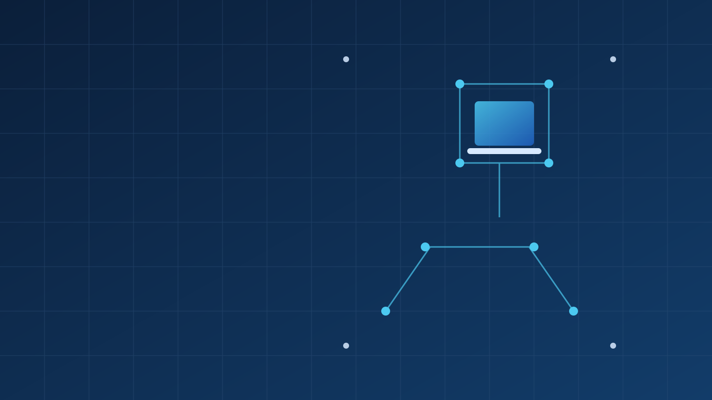

How the web works
A browser asks a server for files, then builds the page you see using HTML, CSS, and JavaScript.

Technology, made clear
Short, practical guides to the web, artificial intelligence, computing, and staying safe online.
Welcome
Technology moves quickly, but the ideas behind it are often simpler than they look. Tech Atlas breaks those ideas into small, useful explanations you can read in a few minutes.
Start with the topic library to browse by subject, or use Find Your Path to get a suggestion based on what you want to learn.
Start here
These foundations make the rest of technology much easier to understand.
A browser asks a server for files, then builds the page you see using HTML, CSS, and JavaScript.
AI finds patterns in data to make predictions or generate content, rather than following only fixed rules.
Strong passwords, two-factor authentication, and careful clicking stop most common attacks.